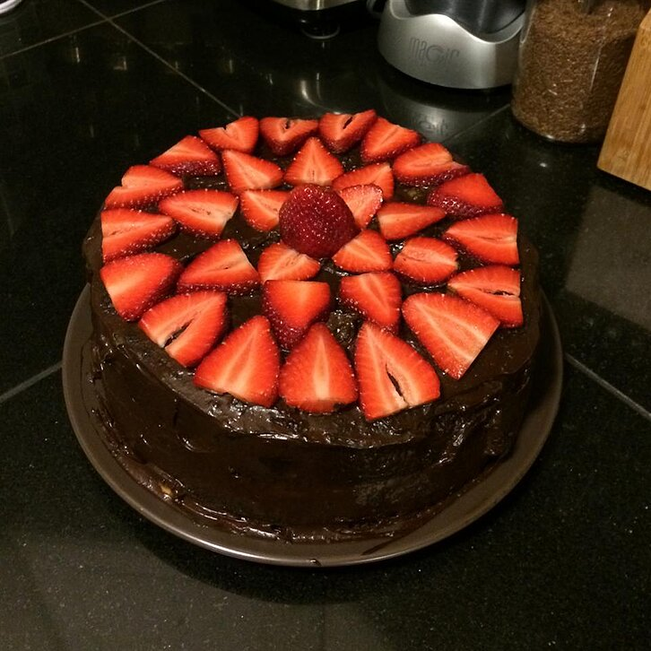

Vegan Chocolate Cake

Description
This is a really simple, yet very tasty cake.
You can use rice flour or something other than wheat.
You can also add chocolate chips and, or nuts.
Ingredients
- 1 ½ cups all-purpose flour
- 1 cup white sugar
- ¼ cup cocoa powder
- 1 teaspoon baking soda
- ½ teaspoon salt
- ⅓ cup vegetable oil
- 1 teaspoon vanilla extract
- 1 teaspoon distilled white vinegar
- 1 cup water
Steps
-
Preheat oven to 350 degrees F (175 degrees C).
Lightly grease one 9x5 inch loaf pan.
-
Sift together the flour, sugar, cocoa, baking soda and salt.
Add the oil, vanilla, vinegar and water.
Mix together until smooth.
-
Pour into prepared pan and bake at 350 degrees F
(175 degrees C) for 45 minutes.
Remove from oven and allow to cool.